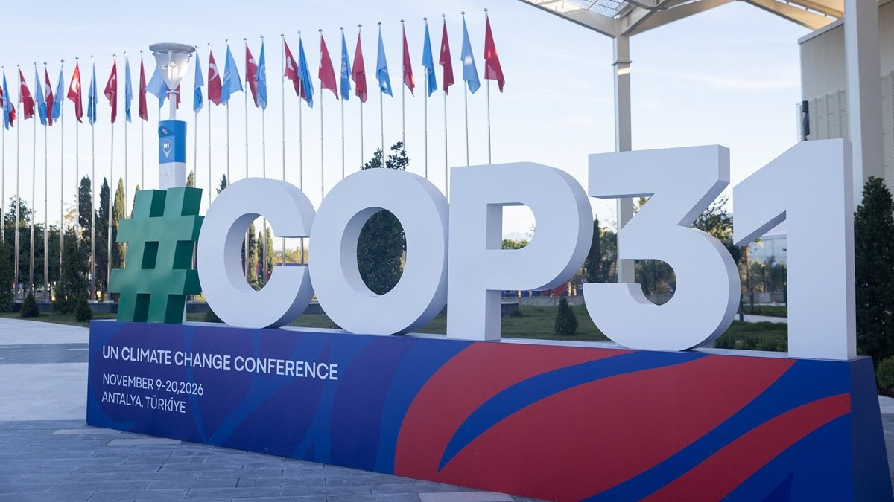

COP31: What Nigeria, other African countries will push for at UN climate summit

## African negotiators set out priorities for COP31
The African Group of Negotiators (AGN) says it will press for increased and predictable climate finance at COP31, including grant-based and concessional funding and an ambitious replenishment of the Green Climate Fund (GCF). The conference is scheduled to take place in Antalya, Türkiye, from 9 to 20 November. Nigeria, one of the 54 countries represented by the AGN, will negotiate under the group’s umbrella. Its delegation and technical support are expected to be led by Nigeria Council on Climate Change Director General Omotenioye Majekodunmi.
AGN Chair Nana Antwi-Boasiako said African countries had developed structures to implement the Paris Agreement, including national climate targets, adaptation plans, carbon market mechanisms and transparency measures. But financing remains a major barrier to putting those commitments into practice. The group has proposed agenda items on tripling adaptation finance and replenishing the GCF. It wants COP31 discussions to clarify how the adaptation-finance decision reached at COP30 will be implemented, and for next year’s GCF replenishment to secure strong contributions.
The AGN also says developed countries must meet their existing financial obligations under Article 9 of the Paris Agreement. While the group is open to broadening the pool of contributors, Antwi-Boasiako argued that contributions from other countries must not replace developed countries’ obligations. Negotiations are divided over finance, with developing countries seeking scaled-up, predictable funding and developed countries pointing to geopolitical and domestic economic pressures.
Other priorities include a Just Transition Mechanism that addresses workers, natural-resource management, energy poverty and wider economic effects, rather than focusing only on energy. The group says the transition should not impose economic hardship or leave African countries unable to use resources needed for development. It is also seeking negotiations on climate-related trade measures, greater consultation on initiatives led by the COP Presidency, and capacity-building to support young Africans entering climate negotiations.
Türkiye will host COP31 while Australia leads the negotiations. The AGN is coordinating with African delegates and engaging other developing-country blocs to build support for its proposed agenda items before the agenda is adopted on 9 November. The group sees the conference as an opportunity to strengthen Africa’s position ahead of COP32, which Ethiopia is due to host next year.
Source: Premium Times